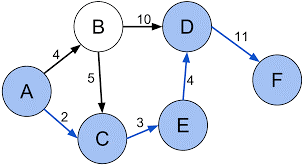

Dijkstra’s algorithm#
A network involves nodes and edges. The following directed network involves 6 nodes and 7 directed edges. The number on each directed edge denotes the length of the edge. Suppose each node represents a city and each arrow represents a one-way road between two cities. The number on each arrow is the distance between two cities. For example, the arrow between nodes B and D indicates that you can go from B to D with distance 10, but not from D to B.
.
Given a network, it is often to find the shortest path between two nodes. The network is represented by an adjacent matrix. For example, the above network is represented by the following adjacent matrix.
nnode = 6
adjacentmatrix = matrix(0,nnode,nnode)
colnames(adjacentmatrix) = c("A","B","C","D","E","F")
row.names(adjacentmatrix) = c("A","B","C","D","E","F")
adjacentmatrix[1,2] = 4
adjacentmatrix[1,3] = 2
adjacentmatrix[2,3] = 5
adjacentmatrix[2,4] = 10
adjacentmatrix[3,5] = 3
adjacentmatrix[4,6] = 11
adjacentmatrix[5,4] = 4
adjacentmatrix
| A | B | C | D | E | F | |
|---|---|---|---|---|---|---|
| A | 0 | 4 | 2 | 0 | 0 | 0 |
| B | 0 | 0 | 5 | 10 | 0 | 0 |
| C | 0 | 0 | 0 | 0 | 3 | 0 |
| D | 0 | 0 | 0 | 0 | 0 | 11 |
| E | 0 | 0 | 0 | 4 | 0 | 0 |
| F | 0 | 0 | 0 | 0 | 0 | 0 |
The Dijkstra’s algorithm for finding the shortest path involves the following steps
A is the initial node and F is the destination node. We set A to be the current node and find the neighbor nodes of the current node and calculate the distance from the current node for each neighbor node. Then remove the current node from the node list
Set the node with minimum distance to be the current node. Then repeat step 1 to find the shortest path from A
Stop if it reaches the destination node
Tracing back to find the shortest path
findshortestpath <- function(adjacent, from, to, nodenames){
nnode = dim(adjacent)[1]
result = matrix(0,3,nnode)
result[3,] = 10000
row.names = c("remove","origin","dist")
current = from
result[3,current] = 0
while(current != to){
#find neighbor nodes
neighbor = which(adjacentmatrix[current,] > 0)
#updating distance of neighbor nodes
if(length(neighbor) > 0){
for(i in 1:length(neighbor)){
x = neighbor[i]
dist = result[3,current] + adjacentmatrix[current,x]
if(dist < result[3,x]){
result[3,x] = dist
result[2,x] = current
}
}
}
#removing the current node
result[1,current] = 1
#updating the current node
index = which(result[1,] == 0 & result[3,] < 10000)
if(length(index) == 0){
return(paste("cannot go from", nodenames[from],"to",nodenames[to]))
}else{
x = result[3,index]
current = index[which(x == min(x))[1]]
}
}
inode = result[2,to]
str = paste(nodenames[inode],"->",nodenames[to])
while(inode != from){
inode = result[2,inode]
str = paste(nodenames[inode],"->",str)
}
return (paste("The shortest path:",str,"with distance =", result[3,to]))
}
nodenames = row.names(adjacentmatrix)
findshortestpath(adjacentmatrix, 1, 6, nodenames)